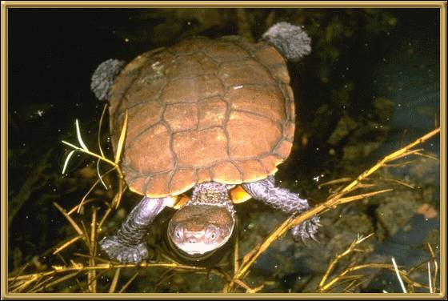

These tortoises are extremely rare and highly endangered.
In the 1980's there were only 30 left in the world, but careful management has
brought the numbers up to aapproximtely 90. They are only 15cm long (approx. 6
inches).
Photographer: Unknown